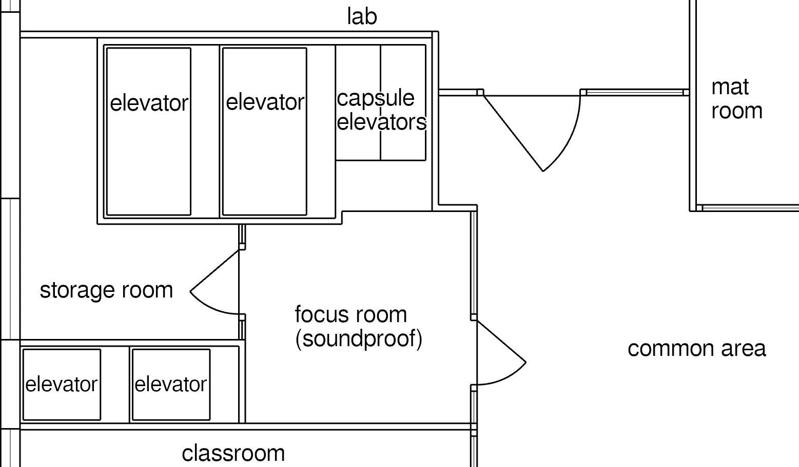
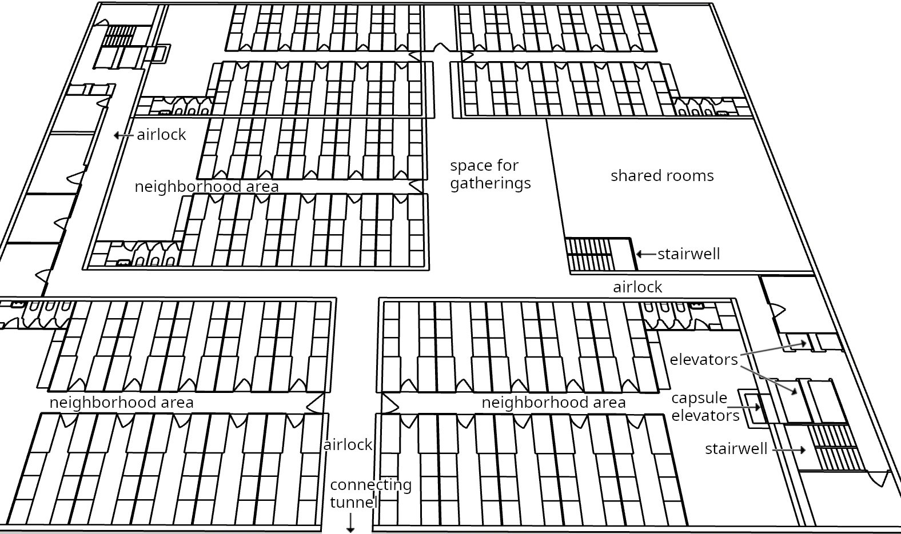
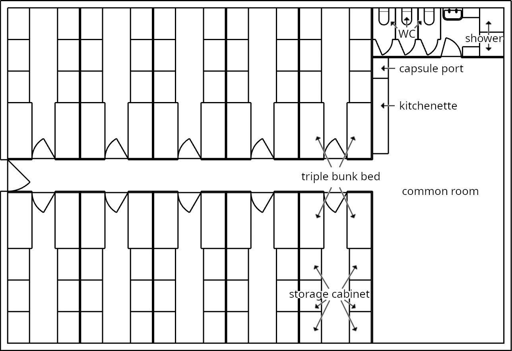

Floor Plans
School Building in the Container House
It is possible to integrate the school building presented in Chapter 7 as the lowest four floors of a container house (Chapter 9.2). This is especially useful if the city concept from Chapter 9.3 is to be implemented (as it puts every school into the middle of ample green space).
How do we manage this integration, given that the stairwells and elevators are located in different places in the floor plans?
First, we should remind ourselves how many people each part of the building is actually designed for, and how much capacity we therefore need in elevators and stairwells. Twenty residential floors mean 600 container slots, or about 600 residents. During school hours, by contrast, the school’s four floors contain 1,000 students and 100 teachers, significantly more than all residential floors combined. On top of that, the stairwells will be heavily loaded at the beginning and end of classes and breaks, when many students head to their classrooms at the same time. Most of us can probably remember well from our own school days how crowded the corridors and stairwells were at those times.
For this reason, the stairwells in the two floor plans are dimensioned very differently:
The residential building’s stairwells are only 1.25m wide. Wide enough to use comfortably, but with people coming the other way you do have to step aside. They are there for emergencies, to change floors within the neighborhood, or to visit the neighborhood above or below your own. To reach your apartment on the 10th or 20th floor from the entrance, by contrast, most people will use the elevator.
The school building’s two staircases, by contrast, are each 2.6m wide. That is enough for three students to walk side by side with ease. Since here only the first three floors above the ground floor need to be reached, most students and teachers will use the stairs rather than the elevators. The elevators are for transporting heavy objects and for students and teachers with mobility limitations, for example to provide wheelchair access.
So the question is not how we can unify the stairwells and elevators of these two building parts. On the school floors, we need the school building’s staircases. On the residential floors above, the smaller stairwells are entirely sufficient. Since the residential-floor stairwells are largely meant for changing floors and only in an emergency for access from the ground floor, we do not want them to make classrooms unusable. They should therefore only start above the school. That means that, in the middle of the open space of the lowest neighborhood (see the floor plan in Chapter 9.2), two staircases end. Naturally they are smaller, since we no longer need 2.6m-wide stairs here. Within the neighborhood, paths then lead from these staircases to the two stairwells in the building corners, which continue up into the higher floors.

The elevators, by contrast, have to be dedicated. No one should have to switch elevators to reach their apartment. Therefore, the elevators start at the ground floor and then run through the school floors without providing any exits there. As a result, five classrooms are lost in the school’s five half-floors, namely the middle classroom of the mixed room cluster in each case (left room cluster in the floor plan in Chapter 7.3). The remaining space from the lost classroom can be used for a second focus room and a storage room. In addition, the lower classroom becomes somewhat larger. We can expand the school from five to six half-floors to compensate for these five lost classrooms.
Protected Basement
The high-rise I presented in 9.2 has 30 floors, 20 of them residential. For structural reasons alone, its basement will probably have to extend at least three stories down into the ground. To make it possible to access the two traffic tunnels as well (city design in Chapter 9.3), we also need three underground levels, since one level of the underground road network is almost two building stories high.
The top basement level is used for bicycle storage, storage rooms, and other infrastructure of the high-rise. Each of the two deeper basement levels provides access to a connecting tunnel, and it serves as a retreat space for the residents of ten residential floors in case of danger.126

The basement has airlocks. While something like that would be far too expensive for a normal house, it is easily feasible in a basement level designed for 300 people. The airlocks must be passed through in order to reach the protected area of the basement from the elevators and stairwells, or from the connecting tunnel. For example, they can protect it from dangerous gases or toxic smoke by maintaining a slight overpressure.
The stairwell on the right in the middle, within the protected area, connects (only) these deeper basement levels with each other so that you can change levels without leaving the protected area. Above and to the right of this central stairwell (not shown in detail) there will be resources such as workshops, water tanks, diesel generators with fuel, the central control and monitoring for the basement, and other centrally managed resources. The large open area to the left of it (138m²) serves as a central meeting point for those seeking shelter in the basement.

Neighborhoods are not torn apart in this basement. Instead, each has its own self-contained area. If its members actually know each other and support each other, then in an emergency no one in this protected basement will be left alone. Everyone will have other people around them they can rely on.
Of course, space is very tight here: after all, all residents of ten floors have to manage on just one floor.
Each neighborhood has a common room of about 60m²—large enough for a full assembly. Connected to it is a bathroom area with three toilets and two shower enclosures.
In everyday life, this common room can be used for normal purposes such as celebrations. That is useful in itself, because it means, for example, that problems with kitchen appliances or pipes will be noticed.
Besides a kitchenette, the common room also contains a capsule port. The neighborhood can use it to send or receive things via the capsulenet, as long as it is functional (as described in 8.4, the capsulenet is designed for resilience).
This capsule port is permanently built into the building, and on the second basement level its outlet to the network goes downward instead of upward. Between the second and third basement levels there is a thick intermediate floor, which among other things contains the capsulenet tubes. As described in 8.4, there must be a level in the basement of every building in which capsule tubes run horizontally.
Each neighborhood has ten identical rooms in its area, each of which corresponds to six container slots. In each room there are two triple bunk beds (like normal bunk beds, but with three beds stacked above each other). Above each bed there is a lamp and a PD box (power outlet for devices, 8.3), and a curtain can be drawn. This is the minimal private retreat space each resident has here. If a neighborhood has more than 60 residents, the surplus will have to sleep in the common room.
In each of the ten rooms there are also six large cabinets (130cm × 90cm, up to the ceiling), one per container slot. These cabinets can be locked. In our education system (Chapter 7), every resident has engaged with emergencies and disaster preparedness (the modules “First Aid” and “Survival” are mandatory). While some things such as power, air, and water are centrally controlled for the entire basement by the building administration, residents themselves are responsible for most emergency preparations—for example, food supplies. With the corresponding prior knowledge from school, the mix of supplies on hand should be better this way than if you tried to manage all of this centrally through the building administration or the state. It is in every citizen’s self-interest not to be left empty-handed in an emergency. Providing these spaces is an enormous contribution to emergency preparedness. Because the protected basements take up only 10% of the area of the residential floors, their contribution to rent costs should be manageable.